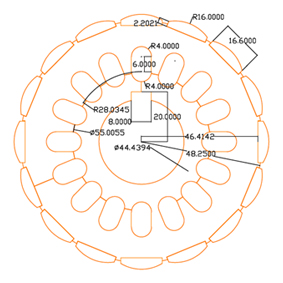
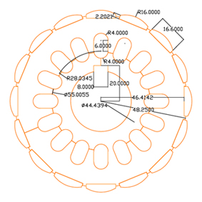

Budowa analizatora energii open source
Projekt budowy analizatora energii open source zakłada stworzenie w pełni funkcjonalnego urządzenia o możliwościach podobnych do komercyjnie dostępnych urządzeń tego typu. Częstą wadą rozbudowanych uniwersalnych urządzeń pomiarowych jest nieprzejrzyste oprogramowanie i jednocześnie niewystarczająca dokumentacja techniczna co bardzo utrudnia ich użycie. Analizator budowany w ramach projektu ma być, w odróżnieniu od komercyjnych rozwiązań, urządzeniem zrealizowanym w oparciu o rozwiązania open source. Bazą całego analizatora będzie komputer jednopłytkowy Rapberry Pi działającym w "ekosystemie open source" tzn. działającym pod kontrolą systemu Linux i korzystającym z bibliotek do obsługi sprzętu udostępnianych na zasadzie oprogramowania o otwartym kodzie źródłowym. Drugim najważniejszym elementem budowanego urządzenia będzie nakładka pomiarowa firmy MCC 118 firmy Measurement Computing dostarczająca do swojego sprzętu biblioteki napisane w językach Python i C++ umożlwiające dowolne modyfikacja kodu (otwarte oprogramowanie). Całe urządzenie obsługiwane będzie przez oprogramowanie napisane w ramach realizacji projektu w języku Python. Wybór rozwiązania podyktowany jest tym, że jest to język skryptowy umożliwiający łatwą modyfikację kodu, a przez to szybkie dostosowanie go do potrzeb realizowanego zadania. Oprogramowanie analizatora w podstawowej wersji będzie umożliwiało realizację kilku podstawowych funkcji:
- pomiar mocy czynnej i biernej z określeniem jej charakteru,
- rejestracje przebiegów czasowych napięcie i prądu,
- oscyloskop,
- pomiar dowolnie definiowanych wielkości (prędkość, moment itd.).
Oprogramowanie napisane będzie w formie modułowej co ma umożliwić łatwe dodawanie nowych funkcji. Kod oprogramowania będzie napisany w sposób przejrzysty z obszernymi komentarzami co ma możliwość łatwe wprowadzanie modyfikacji przez nowych użytkowników. Mierzone sygnały wejściowe napięcia i prądu przetwarzane będą przez przetworniki LEM oraz cęgi pomiarowe dołączone do urządzenia. Według założenia analizator obsługiwany ma być poprzez ekran dotykowy zabudowany w obudowie urządzenia. Obudowa zostanie wykonana w technice druku 3D. Analizator ma być urządzeniem przenośnym zasilanym z wbudowanego akumulatora, których zostanie wykonany w oparciu o ogniwa Li-Ion 18650. Akumulator powinien umożliwiać pracę urządzenia bez zasilania zewnętrznego około 6 godzin co wymagało będzie określenia zapotrzebowania na energię całego urządzenia a następnie zaprojektowania baterii o odpowiedniej pojemności. Opracowane i wykonane przez studentów urządzenie poza wykorzystaniem do pomiarów w trakcie realizacji prac koła, prezentowane będzie na konferencjach kół naukowych, wystawach odbywających się na terenie uczelni oraz spotkaniach ogólnopolskich.
Budowa maszyny elektrycznej zaczepowej
W ramach dofinansowania IDUB kontynuujemy projekt budowy maszyny elektrycznej zaczepowej. Maszynę wykonuję zewnętrzna firma, której prace mają być zakończone w czerwcu. Po przeprowadzeniu badania maszyny zaczepowej za pomocą obliczeń MES 3D wypracowano konstrukcję o maksymalnej gęstości mocy i składowej zmiennej momentu o wartości 2%. Geometrię stojana i wirnika z wymiarami przedstawiają rysunki. Uzwojenie stojana składa się z 76 zwojów nawiniętych szeregowo na każdym z segmentów i połączone w gwiazdę tworząc układ trójfazowy. Uzwojenia zaprojektowano wykonane przewodem o powierzchni 3mm2. Uzwojenia może został nawinięte dwoma rozległymi przewodami o powierzchni 1,53mm2.

 
